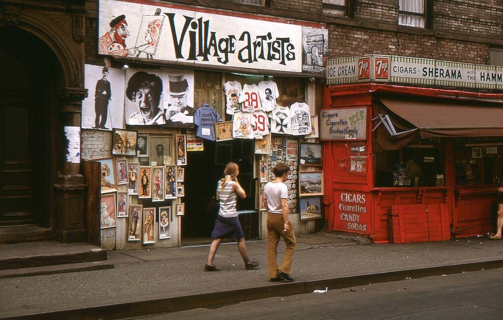
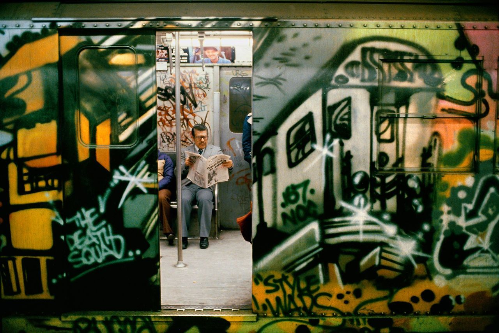
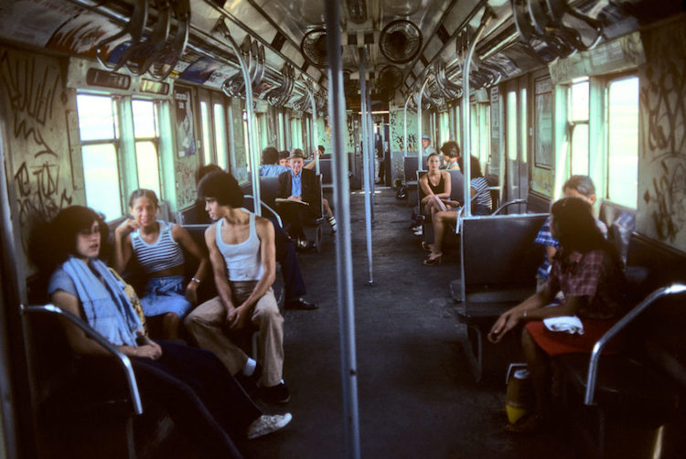
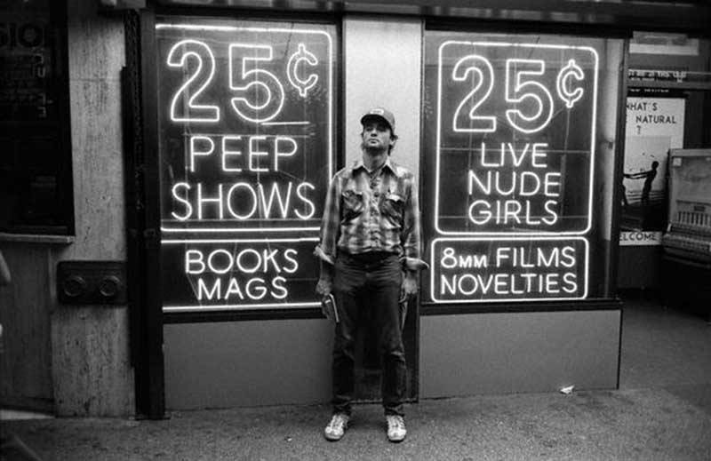

John Coltrane, Alice Coltrane, Pharoah Sanders, Jimmy Garrison and Rashied Ali at the Village Vanguard 1966
John Coltrane, Alice Coltrane, Pharoah Sanders, Jimmy Garrison and Rashied Ali at the Village Vanguard 1966

Photo by Marvin E. Newman, ca. 1983

New York City, Macdougal Street off West 3rd Street, 1969.

Martha Cooper, Style Wars by NOC 167, Manhattan, 1981.
Teenagers in south Bronx, NY 1970


Going Home, NYC, Photo by Tom Arndt, 1970s

Subway 1970s

Bill Murray in Times Square, 1979

Wrong vessel.

Seventh Avenue at Bleecker Street, 1979; photo by Peter van Wijk
This is one of several photos featured in an Ephemeral New York blog post of Mr van Wijk’s shots of NYC when he was a visiting Dutch sailor wandering the streets with his camera. A selection of ten photos is at the link, sharp & high-res enough that I could easily read the street signs in the above pic.